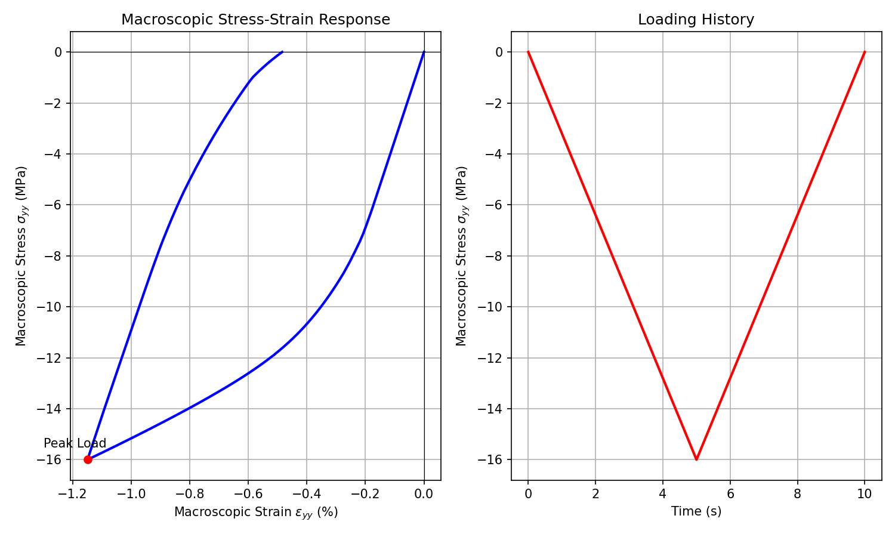

MechaMic Model — FEM² Multiscale Mechanics (2017)
Bil model:
src/Models/ModelFiles/MechaMic.cppInput file:
doc/mkdocs/Specialized/MechaMic/MechaMicBil model author: P. Dangla (Université Gustave Eiffel)
Table of contents
- Context and objective
- Assumptions and Scales
- Variables and basic equations
- Implementation of FEM² coupling
- Discretization and algorithmic resolution
- Test case: Plate under cyclic loading (
test_examples/MechaMic) - Results and material behavior
1. Context and objective
The MechaMic (Mechanics from a microstructure) model implements the numerical homogenization framework known as FEM². Rather than using a macroscopic analytical constitutive law (elasticity, plasticity, etc.), the model delegates the stress-strain material response computation to the resolution, on the fly and at each integration point (Gauss point), of a Boundary Value Problem (BVP) on a Representative Elementary Volume (REV).
The objective is to study or model complex nonlinear behaviors induced by underlying heterogeneity without formulating closed phenomenological constitutive laws.
2. Assumptions and Scales
The paradigm of this model revolves around two bidirectionally coupled scales:
- Macroscopic scale: Manages the global equilibrium of the structure under macroscopic loading, by finite elements (here modeled by
MechaMic.cpp). - Microscopic scale (REV): Each macroscopic Gauss point holds a copy of a micro mesh. The geometry of this REV is specified in the dataset by calling a method
Microstructure [REV_file_name].
Homogenization assumption: The macroscopic strain \(\mathbf{E}\) (computed by the B-matrix on the macro mesh) serves as boundary conditions (often periodic) or load on the microstructural mesh. The macro stress \(\mathbf{\Sigma}\) is then the volume average of the micro stresses of the REV in equilibrium.
3. Variables and basic equations
Variables and Nodal Unknowns (Macro)
For a problem of dimension dim (2D or 3D), the number of unknowns and equations equals dim:
| Macroscopic Symbol | Meaning |
|---|---|
u_1, u_2, u_3 |
Material displacements of the structure in the X, Y, Z directions |
Momentum conservation (Equilibrium)
The code solves the classical static mechanical equilibrium equation at macroscopic nodes:
In weak form (implicit virtual work principle handled in ComputeResidu), this is equivalent to:
where \(\mathbf{\Sigma}(\mathbf{E})\) is extracted numerically from the microstructure solver.
4. Implementation of FEM² coupling
The local integration (MPM_t::Integrate and MPM_t::SetTangentMatrix in Bil) demonstrates the macro-to-micro passage:
-
Strain extraction (
SetInputs): The nodal displacementsval.Displacementof the Macro element provide the local strain \(\mathbf{E}\) (i.e.,val.Strain), accounting for any prescribed macroscopic gradients (MacroStrain). -
Elastoplastic restriction homogenization (
Integrate):The strain increment \(\Delta\mathbf{E}\) is passed as argument to// The macro strain increment gradient for(i = 0 ; i < 9 ; i++) deps[i] = eps[i] - eps_n[i] ; // Start of Microstructure dataset FEM2_t* fem2 = FEM2_GetInstance(dataset,solvers,sols_n+p,sols+p); FEM2_ComputeHomogenizedStressTensor(fem2,t,dt,deps,sig);FEM2_ComputeHomogenizedStressTensor, which solves the internal REV problem and returns the new macro stress \(\mathbf{\Sigma}\) (i.e.,sig). -
Macroscopic Tangent Matrix computation (
These coefficients fill the macroscopic tangent stiffness matrix for the Newton-Raphson process of the macro element.SetTangentMatrix): The macroscopic tangent stiffness tensor \(C_{ijkl} = \frac{\partial \Sigma_{ij}}{\partial E_{kl}}\) is also numerically homogenized, by calling the REV at a perturbed state:
5. Discretization and algorithmic resolution
Using FEM2 considerably increases computation time since an entire mesh is solved at each macroscopic integration point for each Newton-Raphson iteration. The hierarchical communication stored on the heap ensures that:
- The history of internal variables (such as plastic strains) of the REV domain is correctly saved locally (in
Element_GetCurrentLocalSolutions) pass-by-pass for each macroscopic Gauss point. - If the Macro loading requires a time step cut (
Dtmax/Dtini/Tol), the Micro structure formally returns to the old implicit state without offset.
6. Test case: Plate under cyclic loading (MechaMic)
The model case consists of a very simple mesh of a single Q4 finite element representing the macro-structure subjected to an axial tension-compression stress.
Dataset specifications
- Explicit request to allocate a microstructural cell with geometry/behavior defined in the implicit Bil library fileplasticell0. This REV plasticell0 typically contains plasticity zones (e.g., an elastic inclusion with a Von-Mises or Mohr-Coulomb plastic matrix).
Loading conditions (MechaMic):
- Base Reg 13 and left wall Reg 10 blocked perpendicularly (plane symmetry).
- Loading on surface (Reg 11 and Reg 12) by loads (Loads). The applied stress uses a time Function module:
N = 3 F(0) = 0 F(5) = 1 F(10) = 0 (Full loading cycle at \(t=5\) s then return to \(0\) at \(t=10\) s).
- The amplitude of the driving limit is set to 16.e6 Pa (16 MPa).
7. Results and material behavior
The execution yields history outputs at the elastoplastic boundary limits. Thanks to the intertwined scales, the response is nonlinear although MechaMic declares strictly no internal plastic model.
By applying a macro load-unload sweep (via plot_mechamic.py), we reproduce the hardening modulus of the microstructure:

Analysis:
1. Initial Elastic Regime: Strict proportionality up to about 3 MPa.
2. Softened Plastic Flow / Hardening: Nonlinearity appears. The macro degradation stems from the yield limit locally exceeded by various sub-elements inside the REV plasticell0. The tangent modulus (framed by SetTangentMatrix) gently deflects.
3. Unloading: At peak (t = 5s), the elastic stresses of the REV cause a macroscopic unloading parallel to the initial raw elastic modulus.
4. Permanent (Residual) Deformation: At the end of zero macro load (t = 10s), approximately \(0.1\%\) of permanent macroscopic residual strain is recorded in \(\epsilon_{yy}\). The micro spatial heterogeneity and redistribution of residual stresses produce this absolute emergent macroscopic elastoplastic behavior.